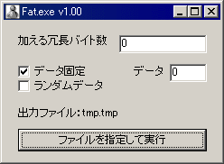

フリーソフト（使用無料）。著作権はとつげき東北が保有。
説明
ファイルの末尾にデータを付加して冗長さを与える、非常に簡単なexeファイル偽装ツールです。
ユニークなファイルサイズから、あるexeファイルがあるソフトであることが特定されたり、またはファイルが発見されてしまうこと自体を防ぐために用います。
ほとんどその用途以外、使い道はありません。
用途
・実行ファイルの簡単な偽装
ファイルサイズからファイルを特定される可能性があり、なおかつそれを防ぎたい場合に使えます。
例えば「WinPTA.exe」に対してこれを利用し、なおかつ実行ファイルの名称を変えてしまうことで、「WinPTA.exe」の存在が第三者からわかりにくくなります。
自分自身のファイルサイズに依存した動作をするタイプの、ごく一部のexeファイルに対しては無効です（作成されたexeファイルは誤動作します）。
・テキストファイル等に対する、暗号の堅牢さ向上
ファイルを（例えば素朴なRSA暗号で）暗号化する際、ファイルサイズが非常に小さい場合に危険な場合があります（理論については他のページで調べてください）。
例えばテキストファイルのように冗長データを付加しても影響がほとんどないファイルの場合、このソフトを使って冗長さを持たせることで、解読されにくい暗号にすることができます。
使い方

加える冗長データを上で設定し、「ファイルを指定して実行」によってファイルを選ぶと、実行時フォルダに「tmp.tmp」というファイルを作成します。
同名のファイルが既にある場合無条件で上書きします。これが「冗長データを付加された元ファイルのコピー」です。
例えば「加えるバイト数10240」として、ファイルサイズ500Kbのexeファイルを指定して実行すると、「tmp.tmp」という名前の510Kbのexeファイルができます。
tmp.exeに名前を変えてダブルクリックすると、元のexeファイルと全く同じに起動し動作するでしょう。
使用前に必ず利用規約に同意してください。同意せずに利用・配布・再配布等をすることを一切禁止します。
このプログラムを使用・配布したことによって生じたいかなる損害にも、とつげき東北は責任を負いません。使用者の責任で使うこと。